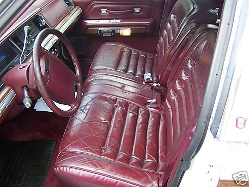
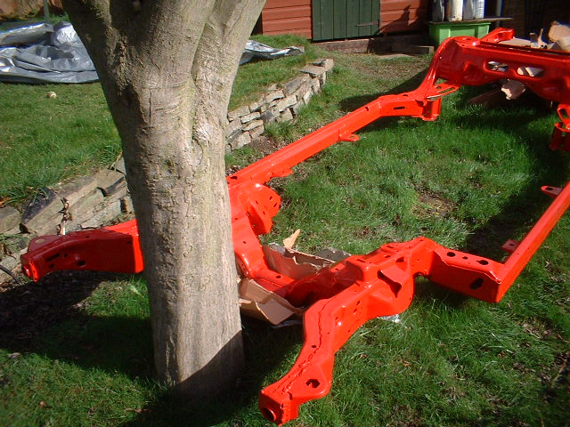

1990 Ford Crown Victoria Country Squire Project

This will be turned into a custom air suspension lowrider looking exactly like this
This has been a frame off restoration

Click HERE for the diary of the build